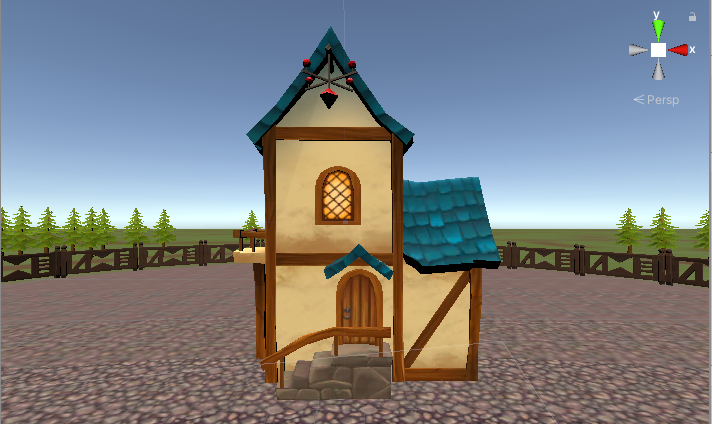
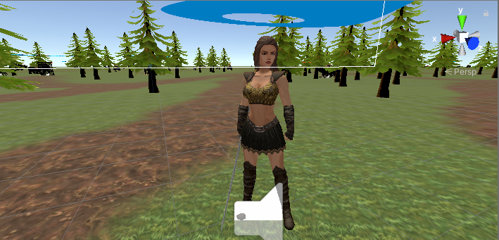
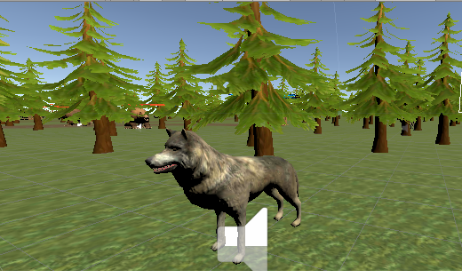
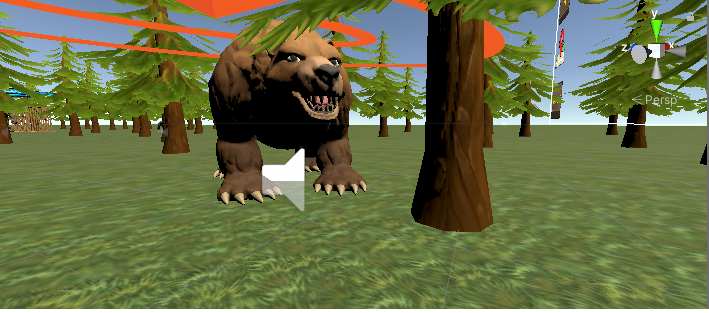
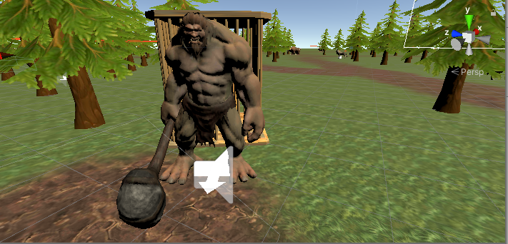
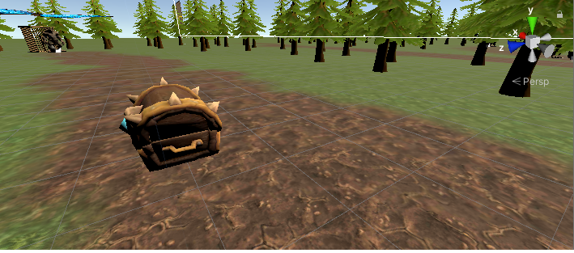

Всім привіт!!! Весь цивілізований світ знає, що на прикінці лютого 2022 року почалася повномаштабна війна росії проти України. Багато країн нам допомагають вистояти та здобути перемогу над ворогом.Україна обєдналась як ніколи раніше. Багато фондів та волонтерів зявилося в Україні які всіма силами допомагають нашим воїнам на полі боя. Люди віддавали на армію останні кошти які мали збережені.Вся країна прикладає зусиль щоб наблизити нас до перемоги. Але на даний час люди не мають таких коштів щоб донатити на ЗСУ. Я подумав що було б добре щоб кожен міг підтримати ЗСУ не маючи коштів. Було прийняте рішення в створенні ігри в якій є реклама,щоб люди в яких є смартфони просто у вільний час грали в ігру,дивилися рекламу,допомагали ЗСУ. Всі кошти зароблені з реклами будуть іти на потреби ЗСУ.Всі подробиці будуть в діскорд.
Save the Butterfly
Як грати в ігру:
Вам потрібно звільняти метеликів з кліток, яких викрали орки у поселення. Також битися з вовками та ведмедями для здобутку монет.Кристали здобуваються з визволених метеликів, а також можуть попастися в сундуках, як і монети. В панелі будинку буде можливість збільшувати свої навики: швидкість,атаку,броню,здоровя та рівень будинку. Збільшуючи рівень будинку ви збільшуєте максимальну кількість монет та кристалів а також здоровя. Головне слідкуйте за своїм здоровям та прокачуйте рівень та навики.
Ігра зараз на стадії тестування, якщо все буде добре працювати без багів та помилок тоді буде повноцінна ігра. Про всі баги та помилки ігри повідомляйте в діскорд в спеціальний розділ щоб була можливість фіксити тому що на різних пристроях свої нюанси.
Будинок
Гравець
Вовк
Ведмідь
Троль
Сундук

Прошу максимально поширювати цю інформацію!!!
Чим нас більше тим більше коштів для ЗСУ.
Завантажити ігру: Save the Butterfly
Заходьте в діскорд канал: Діскорд
Відео ігри: Ютуб Відео
Донат для підтримки проекта та ЗСУ:
Приват банк: 5167 9855 6136 1379 - Володимир.